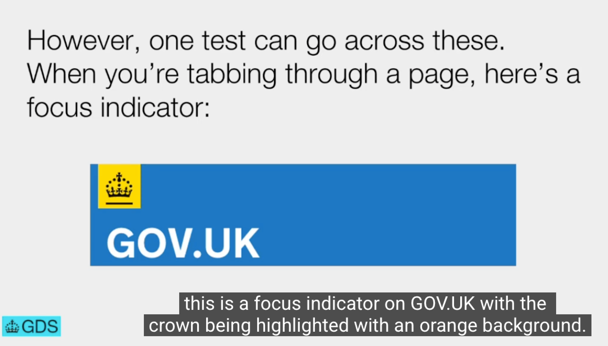
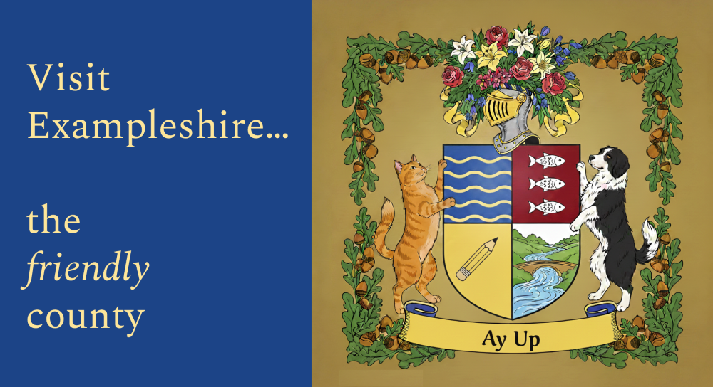

1.2.5 Audio Description (Prerecorded) (AA)
Provide an audio description for meaningful visual content in videos.
What WCAG says:
Audio description is provided for all prerecorded video content in synchronized media.
Check the official guidance for Understanding 1.2.5 Audio Description (Prerecorded)
What this means
Any prerecorded videos with audio need to have an accurate audio equivalent for any meaningful visuals.
Why it matters
Clear audio descriptions are vital to help blind or visually impaired people to perceive visual information.
How to check
In videos where both the audio and video are meaningful, look out for information that is only presented visually. Examples include:
- any text displayed in the video, such as an introduction to a section or a speaker’s name
- an animation describing a process
- a close-up of a painting
- someone’s facial expression which affects the meaning of what they are saying
- clips illustrating the experience of a tourist destination
Check that any meaningful visuals have an accurate audio description.
When visual information is already conveyed through speech in the video - for example, a weather forecaster describing a pattern of cloud - then a separate audio description is not necessary for these parts.
It is also recommended for videos to have transcripts as these help deafblind people access videos. This is a requirement at level AAA.
How to test in detail for 1.2.x Time-Based Media (including 1.2.5 Audio Description (Prerecorded)
Good example
Presenter describes visuals in a presentation
This example is taken from a presentation showing a website component on a slide. The caption shows that the presenter is describing the visible image, saying “this is a focus indicator on GOV.UK with the crown being highlighted with an orange background”.
As the presenter has described the visuals within the presentation, there is no need to add a separate audio description.

Common mistakes
Visual information is not described
Videos often have visual information which has not been given an audio description.
In this fake example of a video on a tourist website, the caption “Visit Exampleshire… the friendly county” would need to be read as part of the video or provided in a separate audio description file. Depending on the intent of the video, it may also be relevant to describe the coat of arms.

Related success criteria
This success criterion is closely related to several others:
- 1.2.1 Audio-only and Video-only (Prerecorded) (A) applies to videos without audio - in this case, either a transcript or audio description are sufficient.
- 1.2.2 Captions (Prerecorded) (A) and 1.2.4 Captions (Live) (AA) require that all videos with audio have captions.
- 1.2.3 Audio Description or Media Alternative (Prerecorded) (A) allows for there to be a transcript instead of an audio description when only meeting WCAG level A. However, at level AA, criterion 1.2.3 is meaningless because this criterion (1.2.5) says that there must be an audio description.
It is also worth being aware of the following AAA criteria - links go to the official guidance:
- Understanding 1.2.7 Extended audio description (Prerecorded) covers videos which pause to fit in a full audio description, when the gaps in the audio are too small to fit in a full description.
- Understanding 1.2.8 Media Alternative (Prerecorded) adds the need for videos with audio to have a transcript.
Useful resources
- Adding an audio description to your videos - Government Communication Service
- Description of visual information guidance on Web Accessibility Initiative (WAI) by World Wide Web Consortium (W3C)
Last updated
This page was last updated in April 2026.